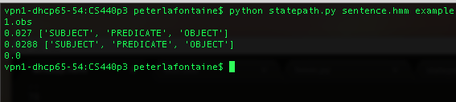
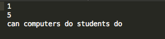
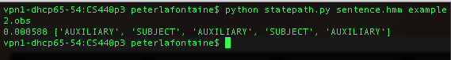
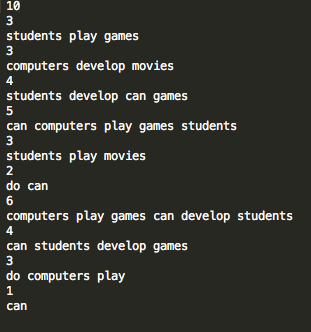
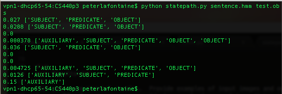

Problem Definition
Give a concise description of current problem. For instance, what
needs to be solved and why it is useful? Do you make any assumptions?
What are the difficulties?
In this assignment we are building a simple natural language processor using Hidden Markov Models.
We are given a simple library consisting of eight english words that can be combined to form sentences.
This is useful because if it is scaled correctly then it can lead to breakthroughs like Dragon naturally speaking
and more recently Google voice and Apple's advances with Siri. We make the assumption that there will not be any other
words that are not in the library in the input. The difficulties are in successfully implementing the necessary algorithms
Method and Implementation
Give a concise description of the implemented method. For example, you might describe the motivation of current idea, the algorithmic steps or any formulation used in current method.
We are using the forward half of the forward-backward algorithm, the Viterbi algorithm, and the Bauer-Welch algorithm.
We use the forward implementation to find the observation probability of each input sentence.
in the forward implementation we first intialize the forward probability as the joint probability of state S_i and the
inital observation O_1. We calculate the rest of the forward variable by summing up the joint probability that O_1,...,O_t are observed,
And then multiplying by the probability b_j(O_t+1). We use the Viterbi algorithm to find the optimal path, where optimality means the path with the
hightest probability of the observations given lambda, the Hiden Markov Model. The Viterbi is remarkably similar to the implementation of our forward algorithm, however instead of
summing, we find the max and argmax of the probability over the sequence of probabilities of the observations
Briefly outline the functions you created in your code to carry out your algorithmic steps described above.
We created three classes that defined the states, the connections between the states and the different output probabilities.
The state class defines the name of the state, the index, and the initial probability. The connect class defines the probability of the
connection (a), the origin and the destination of the connection. The output class defined the originating class, the output symbol, and
the probability of the output (b). We then used these classes to implement the Forward and Viterbi algorithms, according to the tutorials
in the Rabner paper.
Experiments
Describe your experiments, including the number of tests that you performed, and the relevant parameter values. In addition to the given example1.obs and example2.obs we also created another file test.obs that contained 9 different inputs of various lengths and combinations of the given words in the library. We used the original 3 inputs given in example 1, in addition to several that we created ourselves. Our experiments were intended to find the probability of certain inputs given to the HMM. We also wanted to find the difference in probabilities for questions vs. statements, as well as the difference between single words and phrases.
Define your evaluation metrics, e.g., detection rates, accuracy, running time.
For metrics we used the probability of the observation given lambda for each input, and we also looked for the optimal state sequence of the given input.Results
List your experimental results. Provide examples of input images and output images. If relevant, you may provide images showing any intermediate steps
Results | ||
| Trial | Source Image | Result Image |
| trial 1 |  |
 |
| trial 2 |  |  |
| trial 3 |  |  |
Discussion
Discuss your method and results:
- What are the strengths and weaknesses of your method?
- Do your results show that your method is generally successful or are there limitations? Describe what you expected to find in your experiments, and how that differed or was confirmed by your results.
- Potential future work. How could your method be improved? What would you try (if you had more time) to overcome the failures/limitations of your work?
Our method was successful since our tests show that the Hidden Markov Model is able to distinguish between 'good' and 'bad' english sentences. Our methods are generally successful, for both the implementations of the forward algorithm and the Viterbi algorithm. For the forward algorithm, in the first example, the probability is lower than we expected because there should be a greater chance of observing the given sequences. The lower probabilities tell us that the algorithm could be optimized to give a greater chance of observing the sequence. Although the HMM could be optimized to give better probabilities, the HMM is still a reasonable model. Two additional sentences that were tested, "movies do students play games","games develop play students" give probabilities of .019% and 0% respectively, since neither of these sequences are genuine english sentences, and thus don't have high possibilities of being observed, whereas the example1 sentences have a better chance of being observed, as they are closer to being genuine english sentences. For the Viterbi algorithm, implemented in statepath, we can see the state sequence of the input, which allows us to get a better idea of how the HMM can determine how something might get recognized. However, the HMM is able to distinguish the difference between a statement and a question sequence, because the question sequences usually starts with an auxiliary, which means the computer is able to tell when a sequence is a question or a statement based on the first word of the sequence. The HMM can distinguish between the two, however it is more difficult to find optimal question sequences than it is to find statement sequences. Our method could have been improved if we had implemented the Baum-Welch algorithm to better optimize the sequences, which would give higher probabilities of the sequences being observed.
Conclusions
Based on your discussion, what are your conclusions? What is your main message? Our conclusions are that the forward algorithm and the Viterbi algorithm go a long way to solving two of the three major problems that come with using HMMs, and HMM's are very useful for language processing. These methods could very clearly be expanded to further natural language processing capabilities and lead to powerful tools much like the Dragon software. HMMs present an interesting framework for analyzing relatively unstructured data, espcially when it follows some order such as language. Going forward, I expect to see potential applications of HMMs in many different computer science problems.
Credits and Bibliography
Cite any papers or other references you consulted while developing your solution. Citations to papers should include the authors, the year of publication, the title of the work, and the publication information (e.g., book name and publisher; conference proceedings and location; journal name, volume and pages; technical report and institution). Material on the web should include the url and date of access. L. R. Rabiner. A Tutorial on Hidden Markov Models and Selected Applications in Speech Recognition, Proceedings of the IEEE, 77(2), pp. 257-286, 1989. pdf.
Credit any joint work or discussions with your classmates.
This assignment was completed as a team consisting of Karl Shiffler and Peter LaFontaine.